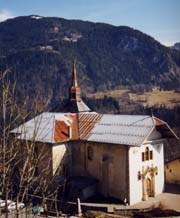

Chalet Montjoye (1180 m)

Département, commune : Haute Savoie, commune de St Gervais les Bains
Carte : IGN Top25 3531 ET pli D1
Situation : St Nicolas de Véroce. Adresse : 4240 route de St Nicolas, 74190 St Nicolas de Véroce, tel/fax 04 50 93 20 22
Propriétaire-Gardienne : Annie Roch-Neirey
Ouverture et gardiennage : ouvert toute l’année
Commodités : 26 places (chambres de 2 à 4 p, avec matelas, draps, couvertures, oreiller, traversin),
demi-pension,
eau potable à l’intérieur.
Accès : en voiture (9 km de St Gervais)
Itinéraires à proximité : GR5, TMB, TPMB, sentier du Val Montjoie, sentier du Baroque
Randonnées à partir du refuge :
guide ou site AsF© : Mont Joly, Aiguille Croche
autres randonnées : Mont d’Arbois
Gîte Nids Alpins (1180 m)
 Département, commune : Haute Savoie, commune de St Gervais les Bains
Département, commune : Haute Savoie, commune de St Gervais les Bains
Carte : IGN Top25 3531 ET pli D1
Situation : St Nicolas de Véroce. Adresse : 1232 chemin des Bouquetins, 04 50 93 20 70, fax 04 50 93 23 93
Propriétaire : SARL les Nids Alpins
Gardien : Christian De Filippis, 140 route de la Croix, 74190 St Nicolas de Véroce
Ouverture et gardiennage : ouvert toute l’année
Commodités : 28 places (chambres de 2 à 4 p, dortoir : avec matelas, draps, couvertures, oreiller),
restauration, bar,
eau potable à l’intérieur.
Accès : en voiture (9 km de St Gervais)
Itinéraires à proximité : GR5, TMB, TPMB, sentier du Val Montjoie, sentier du Baroque
Randonnées à partir du refuge :
guide ou site AsF© : Mont Joly, Aiguille Croche
autres randonnées : Mont d’Arbois